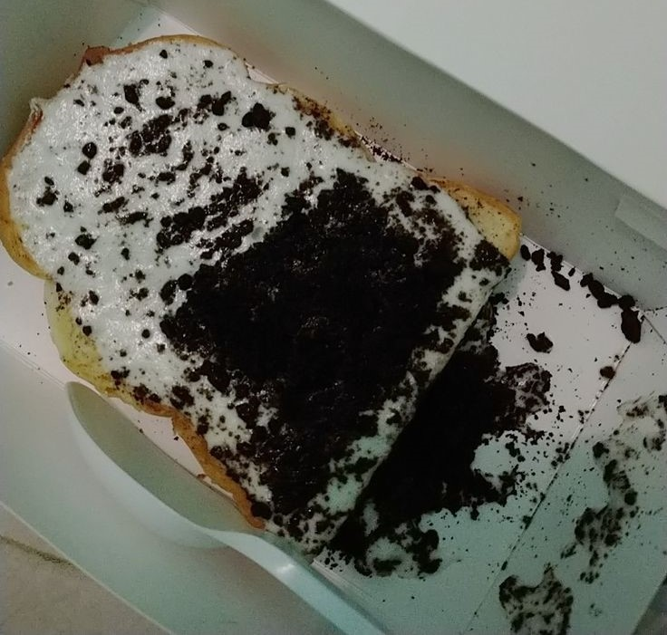
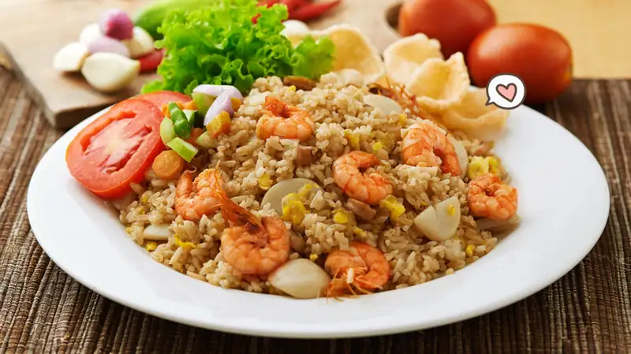
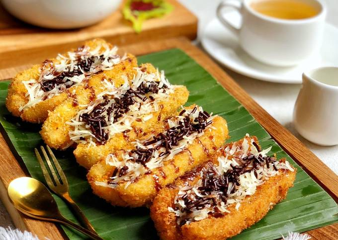

- About Me
Nama: Dhaifina Raiqa Zahira
NIM: 241402056
Kelas: KOM C
- Temu Tengah USU
Ngopi, Ngobrol, NgeSkripsi Juga Boleh
Open hour⏱️
Senin-Sabtu
08:30-17:30
Terbuka Untuk Umum
|
- Indomie Bangladesh
Harga: Rp16.000,00,
Tidak hanya enak, indomie bangladesh ala Temu Tengah USU ini masih cocok di kantong mahasiswa kok.
Hanya dengan kurang dari 20 ribu rupiah, kalian sudah bisa mendapat porsi indomie ukuran sedang dengan
banyak topping bawang goreng.
- Ropang Oreo
Harga: Rp13.000,00
Taburan oreo yang melimpah menambah cita rasa dari roti panggang satu ini. Hangat, wangi dan crispy
rotinya membuat banyak orang tertarik untuk mencoba makanan satu ini.

- Nasi Goreng Sapi/Seafood
Harga: Rp25.000,00
Bagi para mahasiswa yang perutnya kosong setelah kelas dan ingin makanan berat, nasi goreng ini pas
untuk kalian cobain. Gurihnya nasi beserta empuknya daging sapi dan beragam seafood akan membuat
perut kalian puas.

- Pisang Goreng Cokelat Keju
Harga: Rp17.000,00
Kalau hanya untuk sebagai cemilan atau penutup, kalian harus cobain pisang goreng ini. Cokelatnya
meleleh dan taburan keju melimpah di atas pisang goreng yang masih hangat. Cocok dimakan bersama
dengan teman kalian.

|